1. Giới thiệu, cách đọc
- Mỗi màn là một file HTML tĩnh (không JS, không CDN, không font ngoài) dùng
../assets/ems-docs.cssvàassets/wf-app.css. Khung app gồm UI-02 (bộ chọn Org ▸ Site, bộ đếm cảnh báo, người dùng) và thanh điều hướng trái; các mục có wireframe bấm được để đi giữa các màn. - Đầu mỗi màn có khối: mã trang, mục tiêu, route, persona, vai trò/quyền, FR liên kết, component, link về đặc tả trong 09 và ảnh chụp.
- Dưới khung app là phần Trạng thái không bình thường (dữ liệu cũ, mất kết nối, rỗng, lỗi, không có quyền) theo 09 §6.1, và chú thích thiết kế.
- Mọi bố cục là PROPOSAL; mọi số là Dữ liệu mẫu.
2. Chú giải nhãn
| Nhãn | Ý nghĩa | Ví dụ |
|---|---|---|
| Observed | Mẫu bố cục thấy trực tiếp trong 9 ảnh chụp FusionSolar (../fusionsolar/03_anh_demo/); nội dung cụ thể của ta có thể khác | Dải KPI, energy flow 4 nút, bảng site có cột cấu hình, bảng realtime theo string, biểu đồ lịch sử |
| From docs | Có trong tài liệu hãng (qua kết quả tìm kiếm) hoặc tài liệu nội bộ 05/07/08/10 mô tả rõ | Tạo ticket từ cảnh báo (FusionSolar 7.0), lịch 15 phút và lịch mặc định khi mất kết nối (Schneider), thư viện biểu giá QĐ 1279/QĐ 963 |
| Proposed | Đề xuất của ta, chưa có bằng chứng giao diện | "Cần chú ý", header ngữ cảnh C-14, hộp lệnh theo hạng, hồ sơ Gate M2 |
| Dữ liệu mẫu | Số liệu minh họa, không phải số đo | Site giả định BD-02 |
3. Sitemap
4. Màn hình và ảnh chụp
Ảnh thu nhỏ lấy từ ảnh chụp desktop 1440 px. Ảnh đầy đủ: desktop 1440 px và mobile 390 px (toàn trang, JPEG).
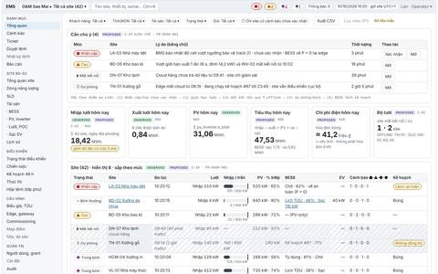
desktop 1440 · mobile 390 · đặc tả


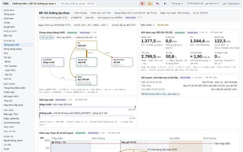
desktop 1440 · mobile 390 · đặc tả


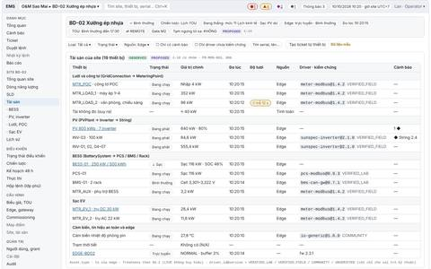
desktop 1440 · mobile 390 · đặc tả


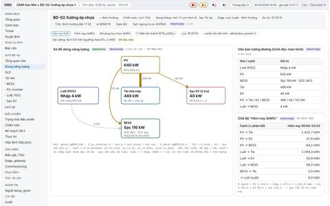
desktop 1440 · mobile 390 · đặc tả


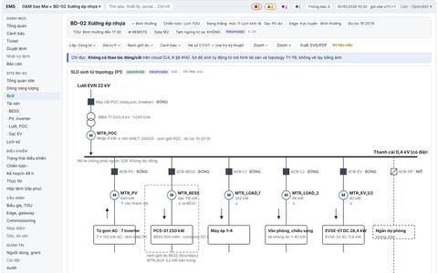
desktop 1440 · mobile 390 · đặc tả


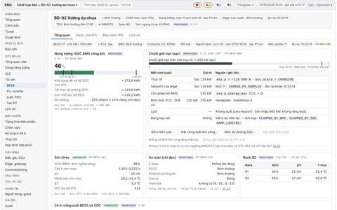
desktop 1440 · mobile 390 · đặc tả


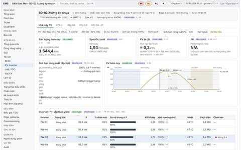
desktop 1440 · mobile 390 · đặc tả


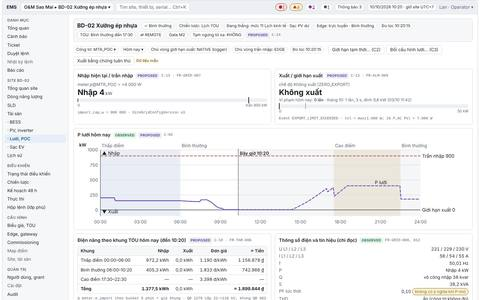
desktop 1440 · mobile 390 · đặc tả


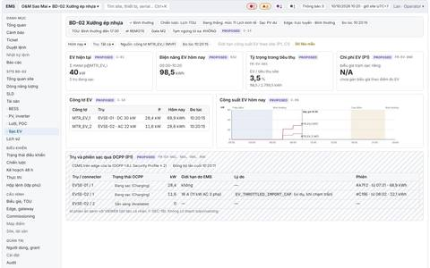
desktop 1440 · mobile 390 · đặc tả


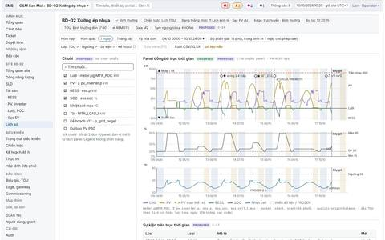
desktop 1440 · mobile 390 · đặc tả


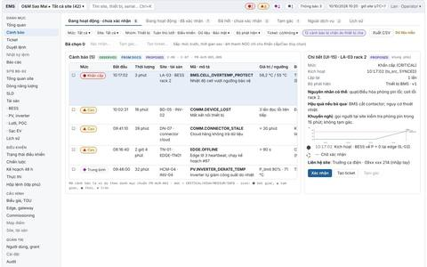
desktop 1440 · mobile 390 · đặc tả


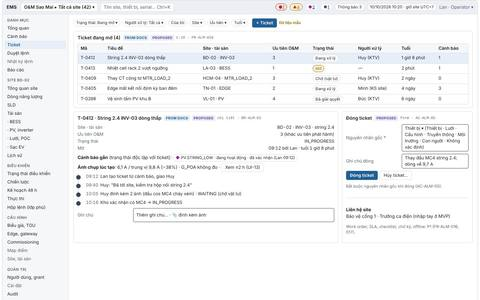
desktop 1440 · mobile 390 · đặc tả


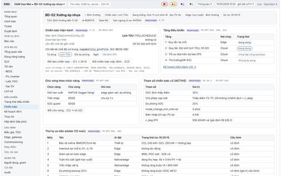
desktop 1440 · mobile 390 · đặc tả


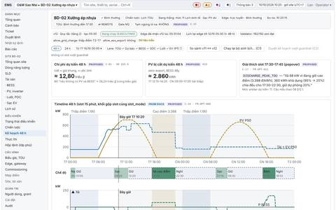
desktop 1440 · mobile 390 · đặc tả


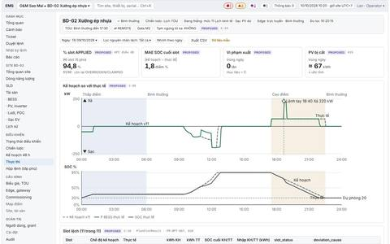
desktop 1440 · mobile 390 · đặc tả


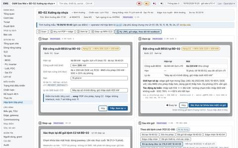
desktop 1440 · mobile 390 · đặc tả


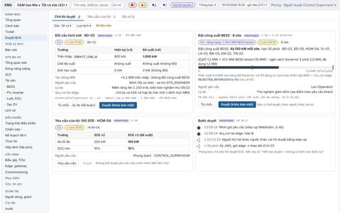
desktop 1440 · mobile 390 · đặc tả


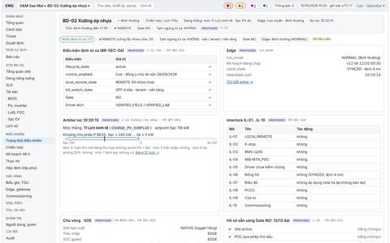
desktop 1440 · mobile 390 · đặc tả


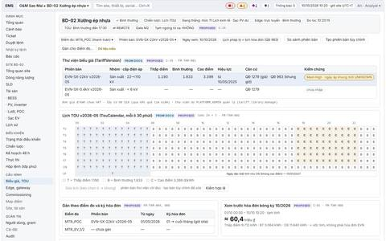
desktop 1440 · mobile 390 · đặc tả


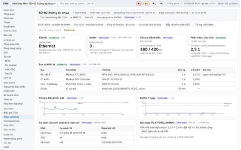
desktop 1440 · mobile 390 · đặc tả


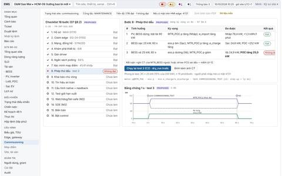
desktop 1440 · mobile 390 · đặc tả


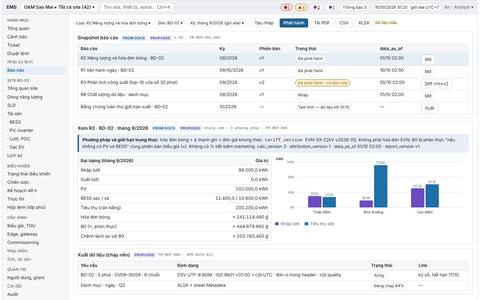
desktop 1440 · mobile 390 · đặc tả


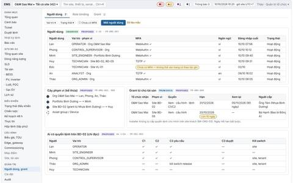
desktop 1440 · mobile 390 · đặc tả


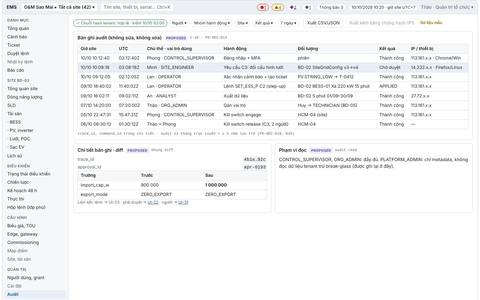
desktop 1440 · mobile 390 · đặc tả


5. Danh sách truy vết
| Mã | Màn hình | Mức · ưu tiên | Mục tiêu | FR chính |
|---|---|---|---|---|
| UI-01 | Tổng quan danh mục | L1 · P0 | Operator thấy site nào cần chú ý trong ≤ 10 s và vì sao; chủ danh mục thấy tổng năng lượng và chi phí hôm nay. | FR-DASH-001, 002, 006, 008, 009, 013; FR-DASH-012 (P1) |
| UI-03 | Dashboard site | L2 · P0 | Trong một màn: chế độ và nguồn lệnh đang chạy, dòng năng lượng, giới hạn lưới, thực tế so với kế hoạch hôm nay, cảnh báo đang mở. | FR-DASH-004, 005, 006, 008; FR-GRID-007, 010; FR-MON-004, 005; FR-OPT-002, 009; FR-HIST-006; FR-DASH-010 (P1) |
| UI-04 | Giám sát tài sản | L3 · P0 | Thấy mọi thiết bị của site theo loại, thiết bị nào lỗi/mất kết nối/bị giới hạn, và mở trang chi tiết đúng loại. | FR-MON-003, 005, 006, 009, 010; FR-GRID-008, FR-BESS-010; FR-GRID-017 (P1) |
| UI-05 | Dòng năng lượng | L2 · P0 | Hiểu ngay site đang mua hay bán điện, pin sạc hay xả, PV đi đâu; phát hiện lỗi đo (lệch cân bằng, sai dấu) khi commissioning. | FR-MON-004, FR-HIST-009, FR-HIST-013 (P1) |
| UI-06 | Sơ đồ một sợi | L3 · P1 | Thấy điện đi qua thiết bị nào, máy cắt nào đóng/mở, công tơ đặt ở đâu và đo theo hướng nào; công cụ commissioning và chẩn đoán. | FR-MON-011 |
| UI-07 | Chi tiết BESS | L3 · P0 | Biết pin đang làm gì, theo lệnh của ai, bị giới hạn bởi gì, còn bao nhiêu năng lượng khả dụng, có dấu hiệu bất thường an toàn không; phát lệnh supervisory trong SOE khi có quyền. | FR-BESS-001…011; FR-OPT-002; FR-BESS-013…018 (P1) |
| UI-09 | PV và inverter | L3 · P0 | Biết nhà máy PV và từng inverter đang phát bao nhiêu so với kỳ vọng tương đối, có bị giới hạn không (do ai), string nào yếu. | FR-PV-001…005; FR-ALM-003 |
| UI-10 | Lưới, POC, công tơ | L3 · P0 (demand P1) | Biết site đang nhập/xuất bao nhiêu so với trần nhập và giới hạn xuất, có vi phạm không, điện năng và chi phí theo khung TOU hôm nay; xác minh công tơ. | FR-GRID-001…008, 010, 012; FR-MON-010; FR-ALM-009; FR-TAR-006; FR-REP-007; FR-OPT-003 |
| UI-11 | Sạc EV | L3 · P0 công tơ · P1 OCPP | MVP: thấy điện năng và công suất sạc EV tách khỏi tải nền. P1: trạng thái từng trụ, phiên sạc, giới hạn do EMS áp và lý do. | FR-EV-001 (MVP); FR-EV-002…008 (P1); FR-TAR-004 |
| UI-13 | Trend explorer | L3–L4 · P0 | Điều tra sự kiện và xu hướng: so sánh nhiều chuỗi, nhiều khoảng, thực tế với kế hoạch; xuất dữ liệu có đơn vị và múi giờ. | FR-HIST-005, 007, 008, 010, 012; FR-REP-006; FR-DASH-012 (P1); FR-HIST-014, 015 (P1) |
| UI-14 | Console cảnh báo | L1–L2 · P0 (gom lũ P1) | Thấy cảnh báo cần xử lý theo mức và thời gian, xác nhận, tạm gác có lý do, tạo ticket; không bị ngập khi thiết bị cha mất kết nối. | FR-ALM-001…005, 009, 011, 012 (P1); FR-ALM-021, 022 (P1); FR-BESS-010; FR-DASH-010 (P1) |
| UI-16 | Ticket | — · P0 (work order, SLA P1) | Giao việc xử lý sự cố với đủ ngữ cảnh; kỹ thuật viên nhận, cập nhật, đóng với nguyên nhân gốc; operator theo dõi việc mở. | FR-ALM-010, 016, 017, 018, 020 |
| UI-18 | Chiến lược tối ưu | L2 · P0 | Biết site theo chiến lược nào, tầng nào tạo lịch, ai làm chủ vòng nhanh; đổi chiến lược trong khả năng thiết bị; quản lý phiên bản tham số. | FR-BESS-003, 004; FR-OPT-001…006, 014…016; FR-OPT-017, 019 (P1) |
| UI-19 | Kế hoạch 48 h | L2 · P0 xem · P1 soạn | Thấy pin sẽ làm gì trong 48 h tới, vì sao, kế hoạch nào đang chạy tại edge và có đồng bộ không; (P1) sửa kế hoạch an toàn. | FR-OPT-005, 007, 008, 009, 011, 012 (P1); FR-TAR-002; FR-OPT-018, FR-ADV-003 (P1) |
| UI-20 | Thực tế so với kế hoạch | L3 · P0 | Biết các slot đã chạy đúng kế hoạch đến đâu, lệch vì sao (dự báo, ghi đè ưu tiên cao hơn, kẹp thiết bị, mất liên lạc). | FR-OPT-007, 010 |
| UI-21 | Hộp lệnh và xác nhận | lớp phủ · P0 | Phát một lệnh đúng, hiểu trước tác động và giới hạn sẽ áp, với ma sát tỉ lệ hạng lệnh; theo dõi tới khi thiết bị thực sự áp dụng. | FR-SEC-003, 006, 007, 008, 009, 015, 016, 022; FR-BESS-004…006; FR-PV-003; FR-GRID-003, 006; FR-EV-005 (P1); FR-INT-007 |
| UI-22 | Hàng đợi duyệt C3 | — · P0 | Người duyệt quyết định nhanh và đúng một lệnh nguy hiểm trong cửa sổ 15 phút; người yêu cầu biết yêu cầu của mình đang ở đâu. | FR-SEC-006, 007, 012, 013; FR-BESS-007; FR-GRID-003; FR-BESS-018 (P1) |
| UI-24 | Trạng thái điều khiển | L2 · P0 | Một chỗ trả lời "site có đang nhận lệnh từ xa không, vì sao không, ai/cái gì đang điều khiển, còn thiếu gì để bật Gate M2"; tắt điều khiển từ xa nhanh. | FR-SEC-005, 010, 011, 012, 013, 016, 021; FR-OPT-001, 002, 003, 006; FR-BESS-007, 009; FR-GRID-013, FR-ALM-022, FR-SEC-024 (P1) |
| UI-25 | Biểu giá và TOU | — · P0 (thành phần công suất P1) | Gán đúng biểu giá và lịch TOU có hiệu lực theo ngày cho từng điểm đo thanh toán; thấy trước tác động lên hóa đơn bóng và lịch điều độ. | FR-TAR-001…012 |
| UI-26 | Edge và gateway | L3 · P0 | Biết edge có khỏe không (kết nối, đồng hồ, buffer, chu kỳ điều khiển, chứng chỉ), cấu hình và firmware nào; claim edge mới; đẩy cấu hình; (PO) OTA theo đợt. | FR-MON-003, 008; FR-INT-001, 002, 008…012; FR-HIST-016, FR-INT-021, 023, 024, FR-EV-003, FR-SEC-024 (P1) |
| UI-27 | Commissioning | — · P0 | Đưa site từ commissioning sang active bằng checklist có bằng chứng; chạy phép thử an toàn (dấu, giới hạn xuất, watchdog); sinh biên bản; chuẩn bị bật điều khiển. | FR-INT-002, 005, 007, 015…020; FR-BESS-003, 007; FR-GRID-004; FR-OPT-003; FR-SEC-005, 021 |
| UI-30 | Báo cáo và xuất | — · P0 (R4–R7, lịch gửi P1) | Tạo, xem, phát hành báo cáo có phiên bản; xuất dữ liệu đúng đơn vị và múi giờ; xuất bằng chứng tuân thủ giới hạn xuất. | FR-REP-001…019; FR-HIST-006; FR-TAR-006 |
| UI-31 | Người dùng và grant | — · P0 | Mời và quản lý người dùng, gán vai trò theo phạm vi, cấp/thu hồi quyền có hạn cho tổ chức installer/O&M; biết ai có quyền lệnh trên site nào. | FR-ORG-002, 007…009; FR-SEC-002, 003; FR-ORG-013 (P1); FR-SEC-022 |
| UI-33 | Lịch sử audit | L4 · P0 (xuất có bằng chứng hash P1) | Truy vết không sửa được mọi hành động có rủi ro: đăng nhập/MFA, quyền, grant, SOE/cấu hình, lệnh và kế hoạch, phê duyệt, kill switch, xuất dữ liệu, break-glass, OTA. | FR-SEC-014, 019, 020, 023 (P1); NFR-DATA-009 |
6. Component catalog
LIVE: không huy hiệu ⏱ trễ 12 s
212 kW · cập nhật 10:02 (18 phút trước)
⧗ Mất kết nối từ 09:41
? UNCERTAIN_STALE — BAD_DEVICE ≈ ước tính Cloud hãng ≈ 5 phút
⬣ Khẩn cấp ▲ Cao ◆ Trung bình ● Thông tin
✓ Bình thường ↺ Lịch dự phòng ⇣ Sạc ⇡ Xả ‖ Chờ ⇄ REMOTE ⊘ LOCAL Gate M2 Mô phỏng
Thanh ngang; vạch min / dự phòng / max; "BMS công bố"; không bao giờ hiện 0% khi không biết.
- Đã gửi
- Edge chấp nhận
- Đã ghi, chờ xác nhận
- Đã áp dụng (đọc lại khớp)
Đã áp dụng có giới hạn: 180 thay vì 220 kW — CLAMPED_BY_BMS
Bước 1 Soạn → dry_run → Bước 2 Xem lại → (C2 step-up · C3 gõ mã site → UI-22). Focus mặc định ở Hủy với C2/C3; Enter không gửi.
Hủy Xác thực lại và gửi Tạm ngưng điều khiển từ xa Không đủ quyềnEnergy-flow (C-04), biểu đồ chuỗi thời gian (C-05), timeline TOU (C-10), bảng cảnh báo (C-06), thẻ phê duyệt (C-19), checklist (C-20) xem trực tiếp trong các màn UI-05, UI-03, UI-19, UI-14, UI-22, UI-27.
7. Design tokens
| Họ | Token | Dùng cho | Mẫu (đổi theo sáng/tối) |
|---|---|---|---|
| Trung tính | --bg / --surface / --surface-2 | Nền trang, thẻ, vùng phụ | |
--text / --muted / --border | Chữ, chữ phụ và dữ liệu cũ, viền | ||
--accent | Liên kết, focus, chọn (không dùng cho trạng thái) | ||
| Cảnh báo | --alarm-critical / high / medium / info | Chỉ cho bất thường, luôn kèm hình dạng + chữ | |
| Năng lượng | --energy-grid / pv / bess / load / ev | Chuỗi, nút, cạnh; cố định toàn sản phẩm | |
| Ngữ cảnh | --tou-offpeak / --tou-peak | Dải TOU (luôn kèm chữ) | |
--sim-border | Viền "Mô phỏng" |
Bảng màu năng lượng đã được chạy qua bộ kiểm tra bảng màu (lightness, chroma, tách màu cho mù màu đỏ–lục, tương phản) cho cả nền sáng và nền tối; giá trị trong assets/wf-app.css lệch nhẹ so với 09 §9.1 để đạt kiểm tra (đề xuất cập nhật 09). Cặp Tải/EV chỉ đạt mức sàn ΔE 6,9 nên luôn có nhãn trực tiếp hoặc nét khác.
| Nhóm | Giá trị |
|---|---|
| Chữ | Theo --font của ems-docs.css (font hệ thống, có dấu tiếng Việt); số dùng tabular-nums |
| Khoảng cách | 4 / 8 / 10 / 12 / 16 px trong khung app; gutter mobile 10–16 px |
| Bo góc | 6 px thẻ, 4 px nút, 10 px chip |
| Breakpoint | ≤ 760 px: 1 cột, nav thành dải cuộn ngang, bảng/biểu đồ cuộn trong vùng · ≤ 1100 px: 2 cột |
8. Dữ liệu mẫu dùng chung
Site giả định BD-02 "Xưởng ép nhựa" (Bình Dương, Asia/Ho_Chi_Minh): PV 800 kWp DC / 700 kW AC (7 inverter × 100 kW), BESS 250 kW / 500 kWh (e_usable 480 kWh), 2 trụ EV (DC 30 kW, AC 22 kW, chỉ công tơ ở MVP), export_mode = ZERO_EXPORT, trần nhập 900 kW, biểu giá QĐ 1279 cấp 22–<110 kV (1.190 / 1.833 / 3.398 đ/kWh), khung giờ QĐ 963. Thời điểm: T7 10/10/2026 10:20:15. Dữ liệu mẫu
| Đại lượng | Giá trị | Kiểm |
|---|---|---|
| Công suất lúc 10:20 | Lưới Nhập 4 kW · PV 640 kW · BESS Sạc 116 kW (SOC 46%) · Tải 488 kW · EV 40 kW | 4 + 640 = 116 + 488 + 40 = 644 kW |
| Phân bổ ≈ | PV→Tải 488 · PV→EV 40 · PV→BESS 112 · Lưới→BESS 4 kW | Σ PV 640; Σ BESS 116 |
| Điện năng 00:00–10:20 | Nhập 1.377,5 (thấp điểm 972,2 + bình thường 405,3) · PV 1.544,4 · BESS sạc 122,3, xả 0 · EV 98,5 kWh | Tiêu thụ = 1.377,5 + 1.544,4 − 122,3 = 2.799,5 kWh |
| Hóa đơn bóng hôm nay | ≈ 1.899.844 ₫ | 972,2 × 1.190 + 405,3 × 1.833 |
| Kế hoạch v12 | Nạp lưới thấp điểm 20 → 30% · sạc PV dư tới 95% (≈ 12:20) · giữ, PV bị cắt ≈ 198 kWh · xả ≈ 68 kW 17:30–22:30 về 20% | Luật mẫu tầng 2 theo 08 |
Sơ đồ dấu: dữ liệu/API lưới + = nhập, BESS + = xả (05); giao diện chỉ hiện số không dấu kèm chữ Nhập/Xuất/Sạc/Xả/Chờ. Số liệu được sinh bằng một mô hình mẫu nhất quán, nên vài số khác phác thảo low-fi trong 09 (xem mục 10).
9. Ảnh chụp và chế độ tối
Chụp bằng Chromium headless (Playwright): desktop 1440 px và mobile 390 px, toàn trang, JPEG chất lượng 75; không trang nào cuộn ngang ở 390 px (bảng và biểu đồ cuộn trong vùng riêng). Chế độ tối (prefers-color-scheme: dark): UI-03 tối · UI-19 tối.


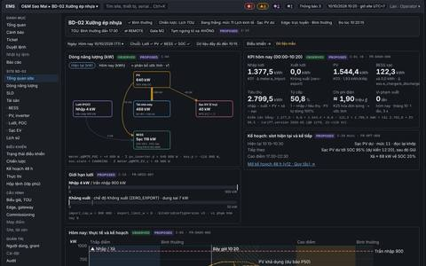
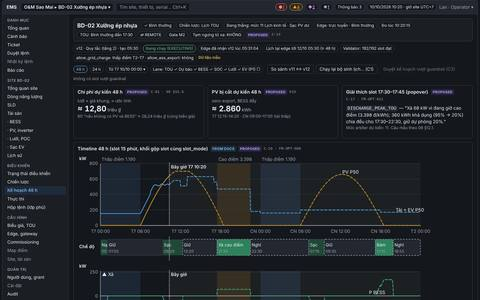
10. Khoảng trống và mâu thuẫn trong đặc tả 09 phát hiện khi vẽ
- Số mẫu không cân: UI-10 ghi "Bình thường 264,3 kWh ≈ 476.000 ₫" nhưng 264,3 × 1.833 = 484.462 ₫; tải đêm 410 kW trong phác thảo UI-19 không khớp nhập thấp điểm 1.020,3 kWh; SOC xuất phát 10% trái với "xả về dự phòng 20%" hôm trước; popover "Xả 180 kW" không khớp 360 kWh khả dụng chia cho 5 giờ cao điểm. Wireframe dùng bộ số tính lại nhất quán.
- UI-22 phác thảo: "6 site × 150 kW = 1,2 MW" sai số học; wireframe dùng 8 site.
- UI-03 phác thảo đếm 1 cảnh báo mở cho BD-02 trong khi UI-09/UI-14 phác thảo có INV-06 mất kết nối (Cao) ở BD-02; wireframe chuyển cảnh báo này sang BD-05.
- Biểu đồ "trục trái kW, trục phải SOC %" (UI-03, UI-07, C-05 "tối đa 2 đơn vị/panel") mâu thuẫn quy tắc không dùng trục kép; wireframe tách panel kW và panel SOC đồng bộ trục thời gian. Đề xuất sửa C-05 thành "1 đơn vị/panel".
- Token màu năng lượng §9.1: cặp Tải (#1f6fa8) và EV (#0f8a8a) không đạt kiểm tách màu; wireframe đổi EV sang hồng (#c2557e) và chỉnh bảng màu tối.
- Chưa có: enum lý do từ chối PDP (X-09-02), tập trạng thái OCPP (X-09-07), danh sách ngày lễ/SpecialDay, định nghĩa "tự cấp"/"tự tiêu thụ" cho KPI UI-03, ngưỡng hiển thị "PV bị cắt dự kiến" trong kế hoạch.
- Trang chưa có wireframe chi tiết: UI-02 (có trong khung), UI-08, UI-12, UI-15 (khung phải của UI-14), UI-17, UI-23, UI-28, UI-29, UI-32, UI-34 (hộp step-up trong UI-21), UI-35, UI-36, UI-37.